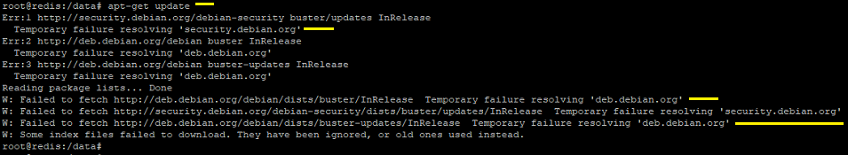
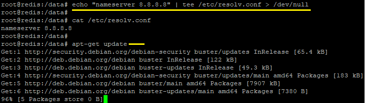
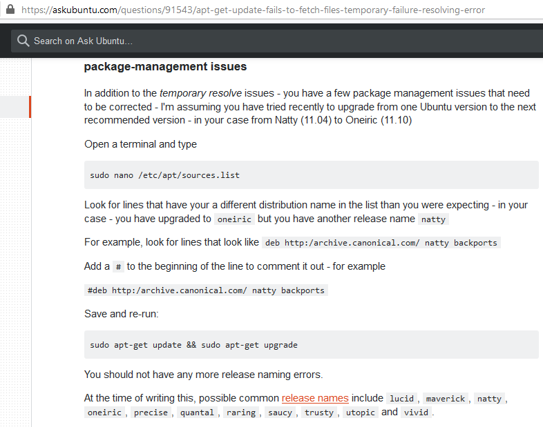

apt-get update error
Issue:
When I try to run apt-get update command on one of the redis database pods, it returns with "Temporary failure resolving 'security.debian.org'" & "Temporary failure resolving 'deb.debian.org'" error message.Error message from the command is displayed as in given below screenshot,

Resolution:
Tried out modifying /etc/resolv.conf and fixing some permissions in package directories but with fail tried to check below link and luckliy it got fixed. Though it was a POD for me and I would be deleting it later point of time but it simplified the process of fixing the issue.https://askubuntu.com/questions/91543/apt-get-update-fails-to-fetch-files-temporary-failure-resolving-error
Inside the link, please follow wither of the temporary resolve messages or package management issues pertaining to your issue. For me below command command worked like a charm as it was a 30 min temporary issue for me.
echo "nameserver 8.8.8.8" | sudo tee /etc/resolv.conf > /dev/null

Make sure that you are following the line mentioned for package-management issues so that the issue gets persisted. 
Back to Home